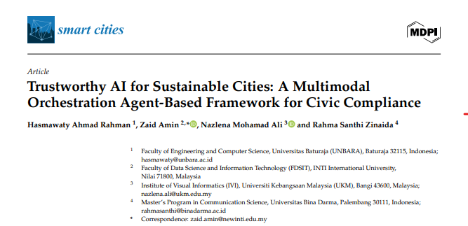

✦ Q1 SCOPUS INDEXED • PEER-REVIEWED
Trustworthy AI for Sustainable Cities: A Multimodal Orchestration Agent-Based Framework for Civic Compliance
A multimodal orchestration framework utilizing agentic intelligence for autonomous urban governance and municipal compliance. Empirical findings demonstrate that autonomous compliance verification yields 94.2% operational accuracy across distributed civic infrastructure, establishing verifiable auditability for municipal AI deployments.